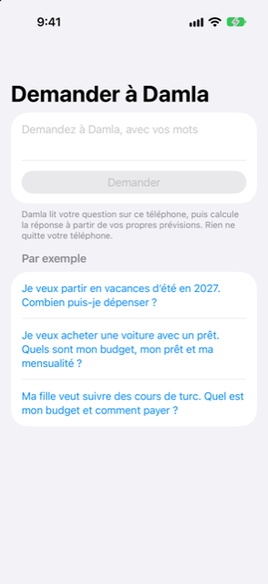

Guide › Planification
Demander à Damla
Demandez avec vos mots si vous pouvez vous offrir des vacances, une voiture ou des cours.
Demander à Damla est une zone de question dans l’onglet Plan qui répond à « puis-je me le permettre ? » à partir de votre propre prévision. Vous écrivez la question comme vous la diriez. Damla vous dit le montant que votre argent peut porter, et sur quoi cette réponse repose.

Quand l’utiliser
- Avant de vous engager dans des vacances, un mariage, un cours ou un déménagement, et que vous voulez savoir ce que votre prévision permet.
- Quand vous envisagez d’acheter quelque chose avec un prêt et que vous voulez le budget, le prêt qu’il peut porter et la mensualité.
- Quand quelque chose est payé étalé dans le temps (des cours, une formation) et que vous voulez comparer payer en une fois contre étaler.
- Chaque fois que, sinon, vous vous demanderiez « que se passe-t-il si je dépense ça ? »
Étape par étape
- Ouvrez l’onglet Plan et touchez Demander à Damla.
- Touchez la zone marquée « Demandez à Damla, avec vos mots » et écrivez votre question. Vous pouvez aussi toucher l’une des questions toutes prêtes sous Par exemple pour remplir la zone.
- Touchez Demander.
- Lisez la réponse. Une carte montre le montant principal ; en dessous se trouvent les détails et une section appelée Sur quoi cela repose.
- Si Damla n’a pas compris, il le dit. Essayez de nommer la chose (des vacances, une voiture avec un prêt, des cours), et ajoutez la date ou le prix si vous les connaissez.
- Pour des dépenses ou un échéancier, touchez Mettre de côté pour cela si vous voulez que la réponse devienne un objectif : Damla l’ajoute avec ce montant et cette date, pour qu’il puisse calculer ce qu’il faut mettre de côté chaque mois.
Comment la réponse est faite
Damla lit votre question sur ce téléphone pour trouver de quoi il s’agit, quand vous aurez besoin de l’argent et tout prix, durée ou taux d’intérêt que vous avez écrits. Le modèle ne lit que les mots ; il ne calcule jamais.
La réponse est ensuite calculée par du code ordinaire à partir de votre prévision :
- Pour des vacances ou d’autres dépenses : un montant confortable et le maximum que votre prévision permet. Confortable signifie 80 % du maximum, pour qu’il y ait de la marge face aux surprises. Si vous avez nommé un prix, une pastille dit s’il tient confortablement, s’il tient mais de justesse, ou s’il dépasse ce que votre prévision permet.
- Pour une voiture ou un autre prêt : une mensualité confortable, le maximum qu’un mois permet, et le prêt que cette mensualité porte sur la durée que vous choisissez. Il montre aussi l’apport encore possible et votre budget en tout. Changez la durée du prêt en mois avec un stepper, ou le taux d’intérêt annuel dans son champ. La réponse se met à jour quand vous les changez. Si vous avez écrit un prix, Damla montre à quoi ressemble ce prix en apport plus mensualités.
- Pour des cours ou tout ce qui se paie étalé dans le temps : si vous avez dit le prix, Damla compare payer en une fois avec l’étalement en mensualités égales. Il montre chaque option avec le solde le plus bas qu’elle entraîne, et recommande le plus petit nombre de paiements qui garde votre solde confortable. Si vous n’avez pas dit le prix, il montre ce que vous pourriez payer par mois sur différents nombres de mois.
Sur quoi cela repose
La réponse utilise votre prévision : vos revenus, vos factures, vos cartes et vos dépenses habituelles, et l’argent déjà présent dans vos comptes. Les dépenses du quotidien de vos comptes bancaires qui ne sont pas déjà une facture sont comptées aussi, et la section dit combien par mois elle a supposé. En dessous, vous voyez aussi la date de début de la prévision, votre solde minimum et, quand cela compte, le solde à cette date.
Bon à savoir
- Votre question et vos données restent sur le téléphone. Rien n’en sort.
- La réponse est une estimation à partir de vos propres chiffres, pas un conseil financier.
- Les deux chiffres à comparer sont confortable et le maximum. Dépensez plus que confortable seulement si vous acceptez une marge plus mince face aux surprises.
- La réponse change quand vos comptes changent, vous pouvez donc redemander après avoir ajouté des revenus ou des factures.
Voir aussi
Quelque chose n’est pas clair ou manque ? Écrivez à support@raveniq.ai en indiquant la page.